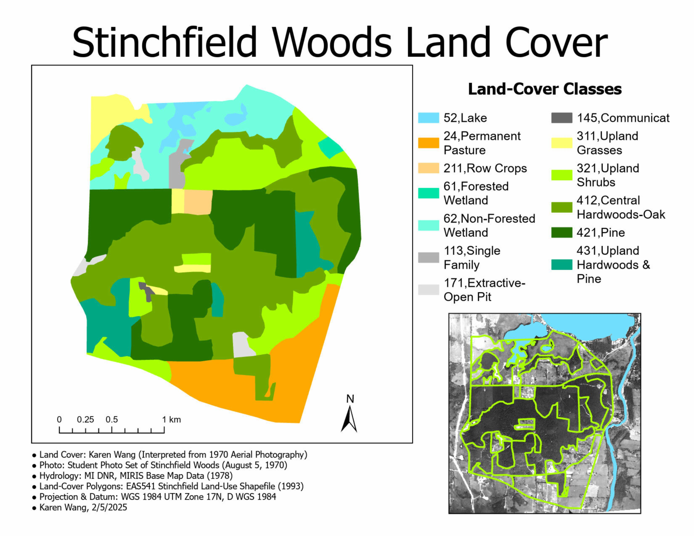

Stinchfield Woods Land Cover
Karen Wang
Description
This land cover map of Stinchfield Woods, Michigan was created by interpreting 1970 aerial photography along with various true and false-color satellite composites. I manually digitized land cover features and classified them using the MI DNR land cover classification system, assigning each polygon to a code and name based on visual patterns, color, texture, and spectral reflectance values in different bands. Through this project, I learned multiple techniques for interpreting satellite imagery and developed skills in digitization and classification.